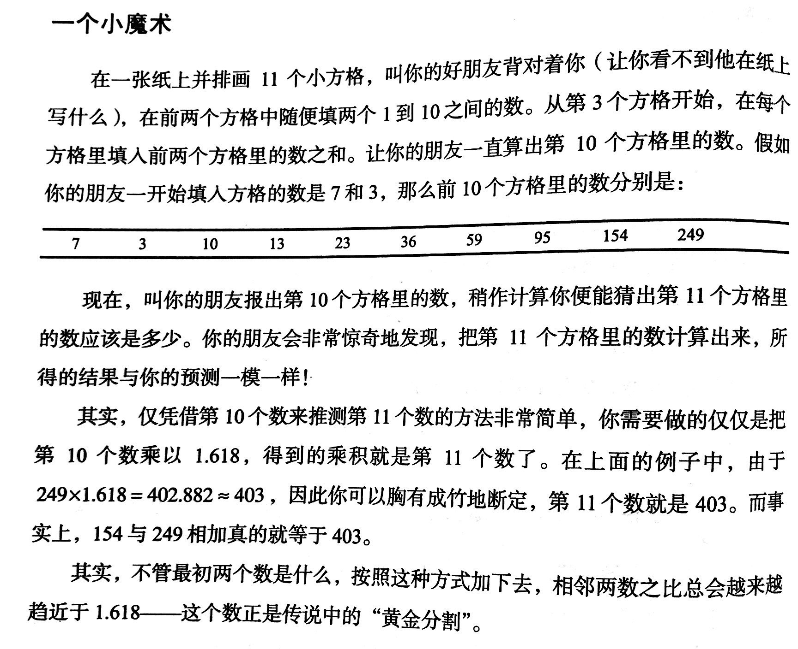

《思考的乐趣》这本书我已经买了多年，但直到最近才读完。书中不乏有趣的数学发现和精彩的证明，不过作为程序员的我，其实更感兴趣的是用代码去复现这些现象、规律。尽管没有什么技术含量，但是将一些抽象的问题可视化，也是一种乐趣。
我挑了几个比较有趣（并且简单）的主题，用JavaScript写了一些小demo。这是第一节。
这里额外做个笔记，黄金分割数=(sqrt(5) +- 1) / 2，大约是1.618或者0.618，两种表示是等价的。
随机生成前两个数，画出这个数列的前N项，能看出其收敛十分迅速：